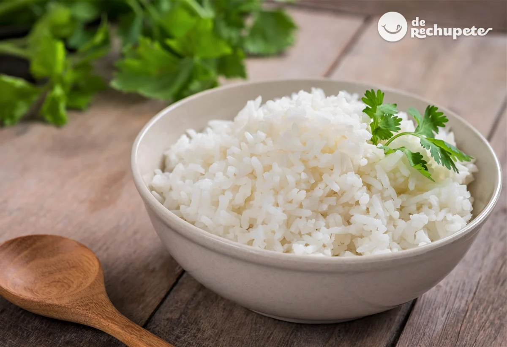

INICIO
ARROZ

Descricion
La preparación de esta delicia culinaria está basada en tiras de pasta que forman capas y que en su mayoría de veces están acompañadas de salsa de carne y pollo. ¡Manos a la obra!
La mezcla perfecta de los sabores de Italia para el mundo. Una de las joyas de la gastronomía no solo por su exquisitez sino también por sus combinaciones, así es la lasaña. Un plato que data de la Antigua Grecia y que es conocido como “Laganon o Laganum”. La preparación de esta delicia culinaria está basada en tiras de pasta que forman capas y que en su mayoría de veces están acompañadas de salsa de carne y pollo, entre otras. En 1634, Giovan Battista Crisci, fue el primer chef en hacer de esta receta una obra de arte, logrando fusionar un sinnúmero de sabores con un ingrediente mágico: el queso gratinado.
Ingredientes
- 18 placas de lasaña
- 100 gr de queso para gratinar
- 300 gr de tomate licuado
- 500 gr de carne picada
- 50gr de aceite
Manual
- cocine
- Ahora tomamos una olla amplia y agregamos la mezcla de cebollas, el ajo y las especias (albahaca, orégano y laurel). Sofreímos con el aceite sin dejar de mezclar, a continuación, subimos el fuego a medio y agregamos la carne con la zanahoria hasta que se vea medio cocida y mezclamos intentando separar lo máximo la carne para no tener grumos.
- Introducimos el tomate, la pasta de tomate, mezclamos a fuego lento. En este momento ponemos la sal, el caldo, y el azúcar. Intentamos cocinar durante unos 15 minutos, probamos si está a nuestro gusto. Ponemos el pellizco de pimienta. (Retiramos del fuego y ponemos en reposo).
- En una sartén ponemos, el aceite con la mantequilla a fuego lento mezclamos con un mezclador de varillas sin parar, agregamos la harina y poco a poco la leche, la sal, la pimienta sin dejar de mezclar hasta que se cocine.